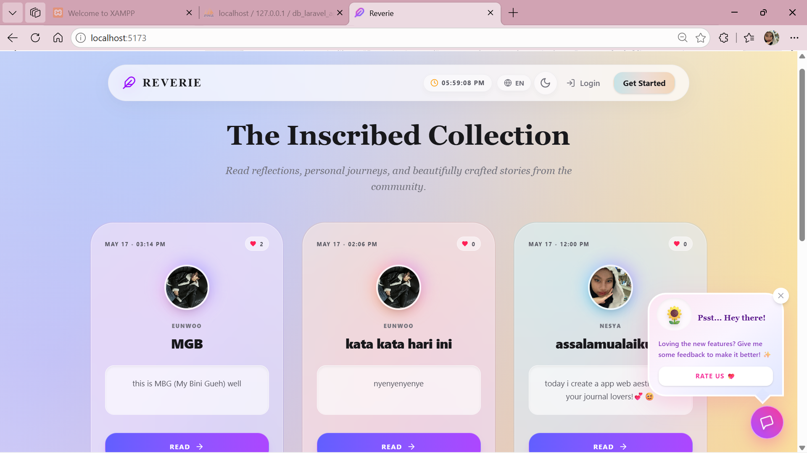
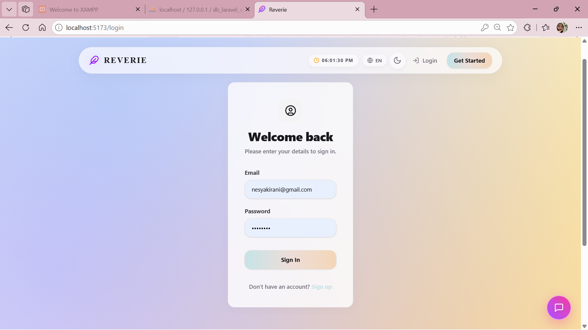
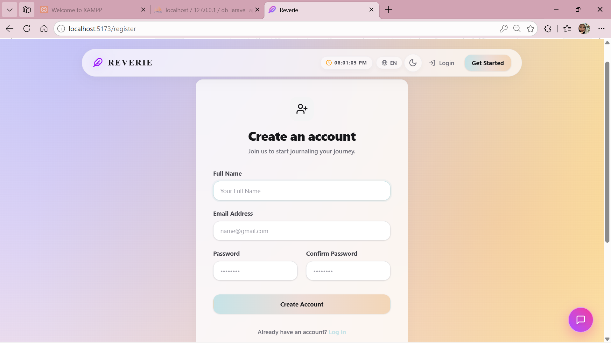
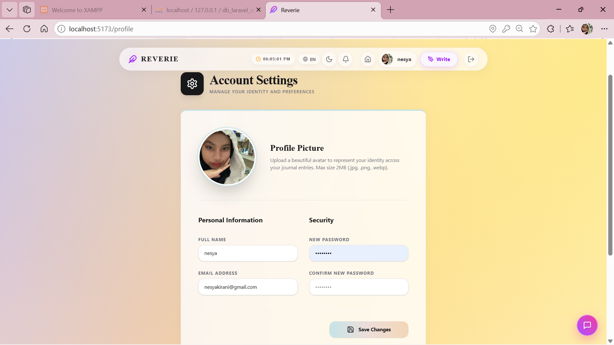
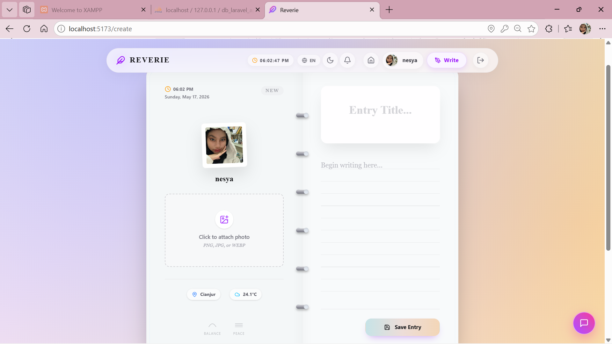
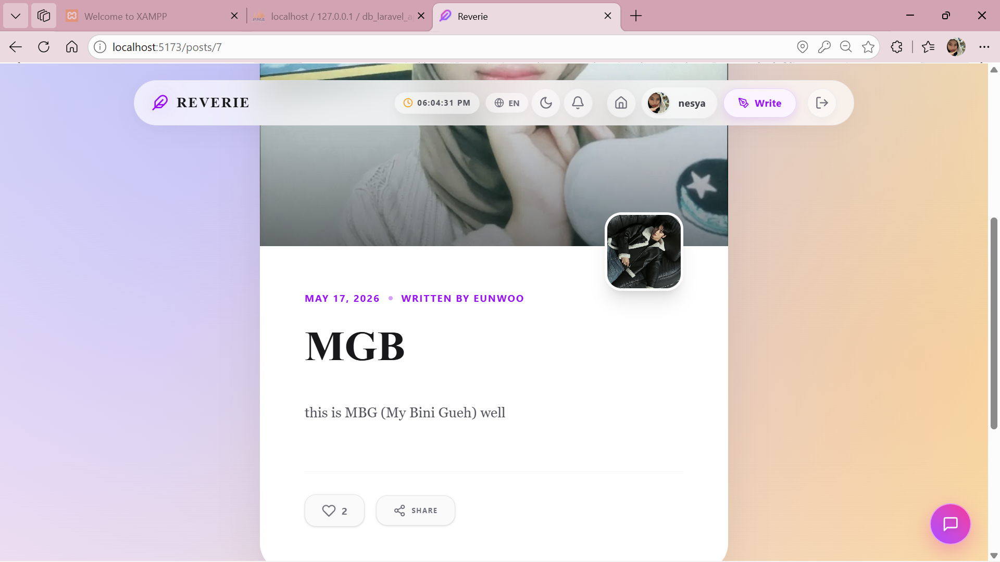
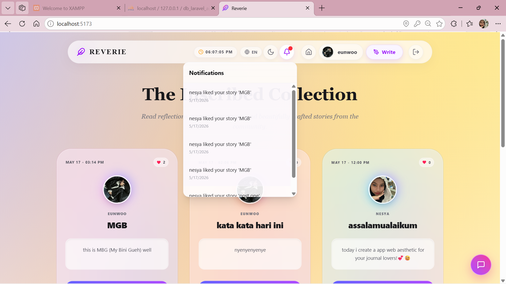
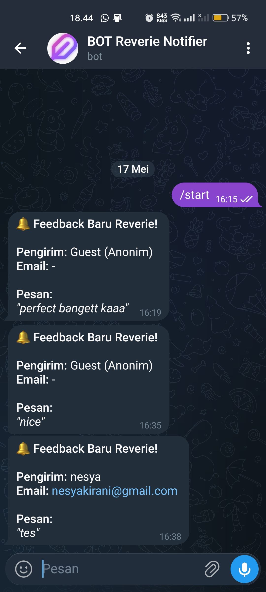

🚀 Arsitektur Sistem & Teknologi
Aplikasi "Reverie Journal" mengadopsi pola arsitektur Decoupled Client-Server, di mana antarmuka pengguna (Frontend) dan logika bisnis serta manajemen data (Backend) dipisahkan secara fisik maupun operasional. Pemisahan ini memberikan skalabilitas tinggi, kemudahan pemeliharaan (maintainability), serta memungkinkan independent deployment untuk kedua sisi.
Frontend: React 19 API Client
- Framework & Build Tool: Menggunakan React 19 sebagai core UI library dengan Vite untuk bundling aset yang super cepat.
- State Management & API: Mengelola state secara internal (Single Page Application) dengan Axios sebagai penghubung komunikasi HTTP asinkron.
- UI/UX Design: Mengadopsi desain "Dark Glassmorphism" menggunakan Tailwind CSS v4, diperkaya transisi halus dari pustaka Framer Motion.
Backend & Keamanan: Laravel 11 & Sanctum
- RESTful API Server: Ditenagai oleh Laravel 11 (PHP) untuk menangani logika bisnis dan operasi CRUD (Create, Read, Update, Delete).
- Authentication System: Mengimplementasikan Laravel Sanctum untuk meng-generate token kriptografi Personal Access Token (PAT).
- Security Architecture: Mengamankan Protected Routes dengan Bearer Token di HTTP Header untuk mencegah akses tidak sah (unauthorized access).
📚 Referensi Pembelajaran & Alur Database
Aplikasi ini dibangun dengan merujuk pada beberapa materi pembelajaran berikut sebagai fondasi dasar, lalu disempurnakan dengan eksplorasi mandiri (self-development) untuk fitur-fitur skala lanjut:
Referensi Backend (Laravel API)
Referensi Frontend (React UI)
Visualisasi Arsitektur & Alur Database (Canva)
Penjelasan Alur Relasi Database (MySQL):
- Users Table: Menyimpan data kredensial autentikasi pengguna. Bertindak sebagai entitas utama yang berelasi One-to-Many dengan entitas lain (Posts, Likes, dan Notifications).
- Posts Table: Menyimpan entitas konten jurnal (teks dan path gambar). Terdapat Foreign Key
user_id yang mengikat secara ketat setiap entitas jurnal kepada pembuat aslinya.
- Likes & Notifications Table: Berperan sebagai tabel interaksi. Ketika User A menyukai Post milik User B, riwayatnya akan tersimpan di tabel Likes untuk memvalidasi sentuhan tombol, dan seketika itu juga memicu data baru ke tabel Notifications sebagai Event Tracker untuk mengingatkan User B secara real-time.
"Selain referensi dasar di atas, seluruh fitur interaktif tingkat lanjut dan penyelesaian bugs (termasuk Telegram Chatbot Webhook, sistem Notifikasi, alur Database kompleks, animasi Framer Motion, hingga estetik Glassmorphism) dieksplorasi dan dikembangkan sendiri sepenuhnya oleh Nesya Kirani Nurroffi."
💻 Dokumentasi Fungsional & Alur Logika

Gambar 1. Antarmuka Utama (Main Feed) & Real-Time Clock
Penyajian Data Asinkron & Integrasi Ekosistem
- Data Fetching: Memanfaatkan hook
useEffect untuk meluncurkan HTTP GET request ke server sesaat setelah komponen UI di-render perdana.
- Layout & Animation: Menata daftar jurnal dalam arsitektur Grid/Masonry, dikombinasikan dengan efek fade-in dan slide-up agar visual tidak monoton.
- Real-Time Clock: Mengintegrasikan komponen jam real-time via
setInterval JavaScript murni untuk menunjang estetika tema journaling.

Gambar 2. Antarmuka Autentikasi (Login)
Mekanisme Autentikasi Pengguna & Tokenisasi Sanctum
- Controlled Form: Mengisolasi dan menangkap input kredensial pengguna (Email & Password) secara langsung melalui React State.
- API Request: Mengirimkan muatan asinkron via Axios ke endpoint
/api/login guna dieksekusi oleh Controller Laravel.
- Token Management: Menangkap balasan Plain Text Token, menyimpannya secara persisten pada
localStorage, lalu memicu manuver Redirect ke area privat aplikasi.

Gambar 3. Antarmuka Registrasi Akun Baru
Alur Pendaftaran Entitas & Penanganan Umpan Balik (Feedback Handling)
- Form Submission: Menstransmisikan objek JSON (Nama, Email, Password) ke endpoint
/api/register dengan dukungan antarmuka transisi visual (loading state).
- Error Handling: Menangani respons 422 Unprocessable Entity dari server (misal: Email duplikat), lalu membedah pesan kegagalan tersebut menjadi inline error message tanpa merusak estetika.
- Auto-Login Flow: Jika basis data sukses mencatat identitas baru (201 Created), sistem otomatis menyiapkan sesi otentikasi agar user dapat langsung mengakses fitur tanpa login ulang.

Gambar 4. Area Personal Pengguna (Profile & Dashboard)
Penerapan Protected Routes & Rendering Data Terotorisasi
- Protected Route Firewall: Menginspeksi memori
localStorage; jika token fiktif atau absen, manuver pemindahan (bounced back) ke halaman otentikasi langsung diaktifkan.
- Authorized Fetching: Menyertakan
Authorization: Bearer {token} pada Header HTTP untuk memverifikasi entitas user sebelum mengambil privasi datanya di server.
- Personalized Dashboard: Menyajikan panel profil interaktif yang menayangkan Avatar dan deretan spesifik jurnal yang mutlak hanya dimiliki oleh pengguna bersangkutan.

Gambar 5. Antarmuka Penulisan Jurnal Baru (Create Post)
Manajemen State Kompleks & Interaksi API Multipart
- Multipart Form Data: Tidak menggunakan struktur JSON standar, melainkan
FormData untuk kapabilitas membungkus teks dan file gambar ke dalam satu lintasan asinkron.
- Client-Side Preview: Menerapkan metode
URL.createObjectURL() untuk seketika menayangkan pratinjau (preview) dari gambar yang baru dipilih pengguna.
- Server File Handling: Modul Storage Laravel bertugas menyeleksi format/ukuran file, memindahkannya secara fisik, lalu merangkai simpul direktori (Path)-nya ke kolom basis data.

Gambar 6. Tampilan Detail Jurnal & Sistem Interaksi (Like/Notification)
Dynamic Routing & Logika Interaksi (Like)
- Dynamic URL Parameter: Mengeksploitasi fitur perutean React untuk menjaring ID spesifik (misal:
/posts/:id) sebagai landasan fetching data jurnal tunggal.
- Optimistic UI: Memoles User Experience dengan merubah wujud tombol "Like" seketika saat di-klik, selagi proses komputasi server bekerja di belakang layar.
- Relational Integrity: Eloquent Model berperan memagari dan memvalidasi interaksi agar mencegah munculnya duplikasi basis data Likes dari pengguna yang sama.

Gambar 7. Pusat Notifikasi Interaktif (Notification Center)
Sistem Notifikasi Event-Driven
- Activity Fetching: Melakukan pemeriksaan API periodik ke rute
/api/notifications guna menghimpun riwayat rekam jejak sosial (seperti sentuhan "Likes" yang baru masuk).
- Relational DB Tracker: Arsitektur struktur tabel didesain matang untuk merangkai ikatan antara Actor ID (pelaku interaksi) dengan Subject ID (objek jurnal terpengaruh).
- Dynamic Alert Component: Pengolahan elemen SVG (Lucide React) cerdas yang menyorotkan noktah merah dinamis apabila status pesan tervalidasi Unread.

Gambar 8. Asisten Chatbot Interaktif & Integrasi Telegram API
Pembuatan Komponen Floating Chatbox & Telegram Webhook
- Floating UI Element: Elemen bot diapungkan menggunakan atribut
position: fixed, dimotori oleh fungsi React Hook (useState) untuk melancarkan operasi buka-tutup jendela (panel toggle).
- Spring Animation: Menganimasikan objek agar terus bergerak natural (looping animation) dengan formulasi perhitungan fisika canggih dari Framer Motion.
- Telegram Ecosystem: Mengalih-fungsikan Laravel sebagai mediator asinkron (middleware) yang men-forward isi percakapan ke gerbang Telegram Bot API. Hal ini membuahkan sarana monitor proaktif langsung ke ponsel pengembang, tanpa membebani daya komputasi perangkat lunak.